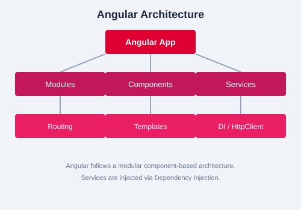

Testing is a critical part of building reliable Angular applications. This chapter covers unit testing with Jasmine and Karma, along with common design patterns used throughout Angular.
Angular CLI scaffolds Jasmine test files alongside your components, services, and other artifacts. Karma is the test runner that executes these tests in a browser environment.
ng testThis command starts Karma, opens a browser, runs all *.spec.ts files, and reports results.
TestBed is the primary API for configuring Angular testing modules. Use it to create a testing environment that mimics your application module.
beforeEach(async () => {
await TestBed.configureTestingModule({
declarations: [MyComponent],
imports: [HttpClientTestingModule],
providers: [MyService]
}).compileComponents();
});A ComponentFixture wraps the component for testing. Call detectChanges() to trigger change detection.
it('should display the title', () => {
const fixture = TestBed.createComponent(MyComponent);
fixture.detectChanges();
const compiled = fixture.nativeElement as HTMLElement;
expect(compiled.querySelector('h1')?.textContent).toContain('Welcome');
});debugElement provides a type-safe way to query the component template and inspect its properties.
it('should have a submit button', () => {
const fixture = TestBed.createComponent(MyComponent);
const debugEl = fixture.debugElement;
const btn = debugEl.query(By.css('button[type="submit"]'));
expect(btn).toBeTruthy();
});Use HttpClientTestingModule and HttpTestingController to test HTTP-based services without making real network requests.
let httpTestingController: HttpTestingController;
let service: DataService;
beforeEach(() => {
TestBed.configureTestingModule({
imports: [HttpClientTestingModule],
providers: [DataService]
});
httpTestingController = TestBed.inject(HttpTestingController);
service = TestBed.inject(DataService);
});
it('should return expected data', () => {
const testData = { id: 1, name: 'Test' };
service.getData().subscribe(data => {
expect(data).toEqual(testData);
});
const req = httpTestingController.expectOne('/api/data');
req.flush(testData);
});Lazy loading delays module loading until the user navigates to that route, improving initial bundle size.
const routes: Routes = [
{ path: 'dashboard', loadChildren: () => import('./dashboard/dashboard.module').then(m => m.DashboardModule) }
];Marking a service with providedIn: 'root' ensures only one instance exists across the entire application — the singleton pattern.
@Injectable({ providedIn: 'root' })
export class SharedService {
private data = new BehaviorSubject<string>('initial');
data$ = this.data.asObservable();
updateData(value: string) {
this.data.next(value);
}
}RxJS Subjects implement the observer pattern. Subject multicasts values to multiple subscribers. BehaviorSubject also emits the current value to new subscribers.
const subject = new Subject<number>();
subject.subscribe(v => console.log('A:', v));
subject.next(1);
subject.next(2);
const behaviorSubject = new BehaviorSubject<number>(0);
behaviorSubject.subscribe(v => console.log('B:', v));
behaviorSubject.next(1);BehaviorSubject over Subject when new subscribers need to know the latest value immediately.
/api/users. Mock the HTTP call using HttpTestingController. Then write a component test that verifies the user list renders correctly in the template.